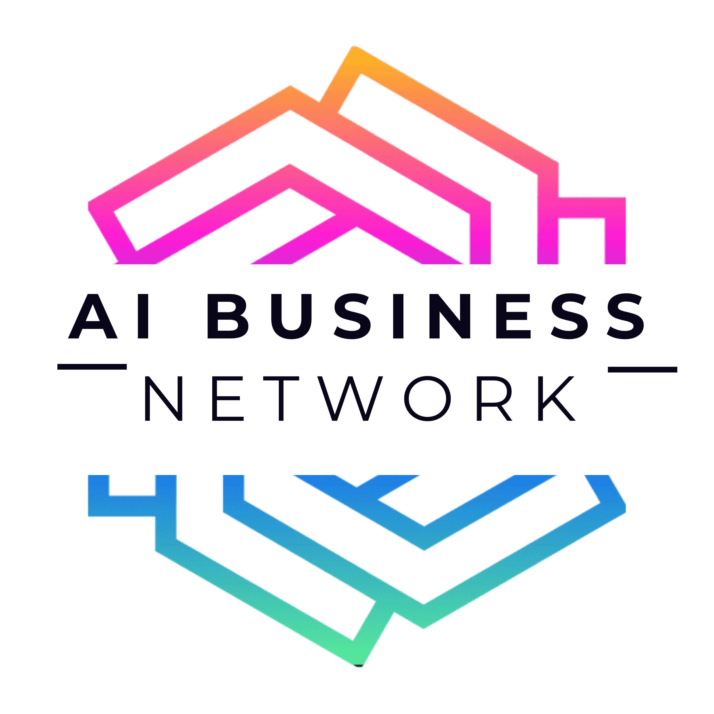

Assess Your AI Maturity
Discover where you stand on your AI transformation journey using the proven SCALE framework. Get personalized recommendations to accelerate your growth.
SStrategic
CChart
AAlign
LLaunch
EEvolve
73%
of AI initiatives fail to scale
4.3x
higher success with SCALE
25
questions across 5 dimensions
Bring your results to the AI Architecture Lab to move to the next level, implement effectively, and ensure you realize the true value of AI.